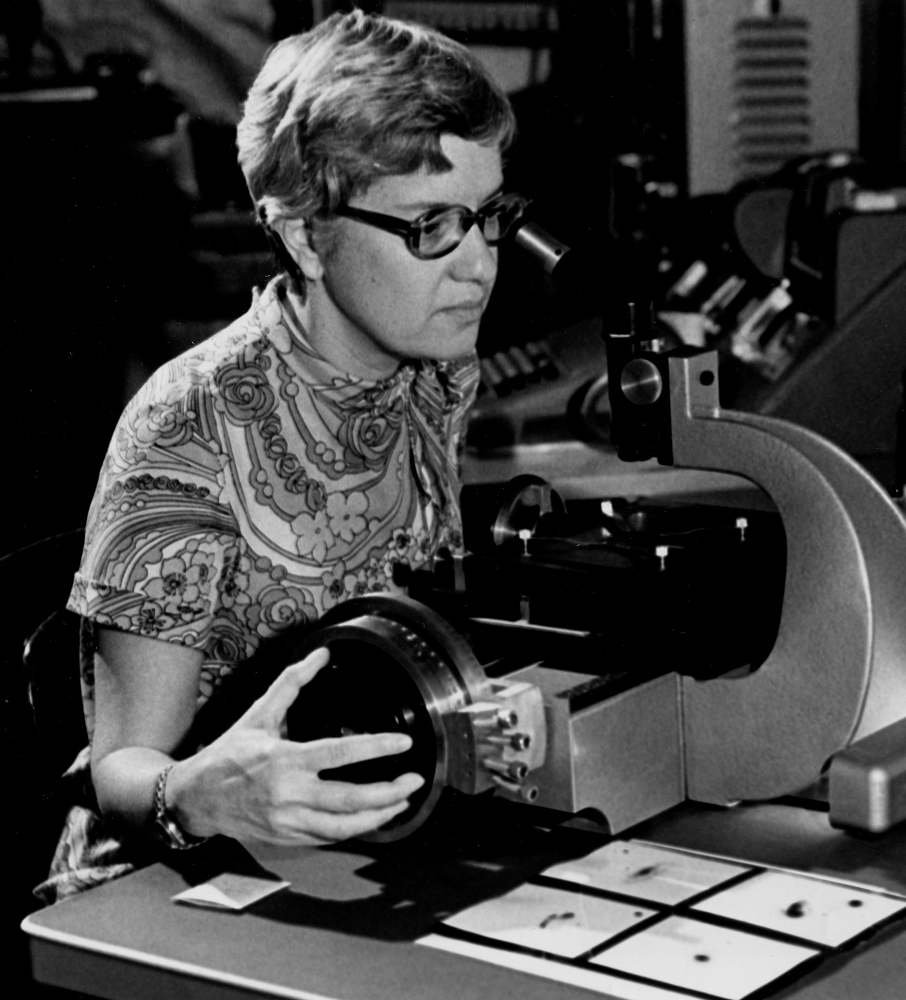
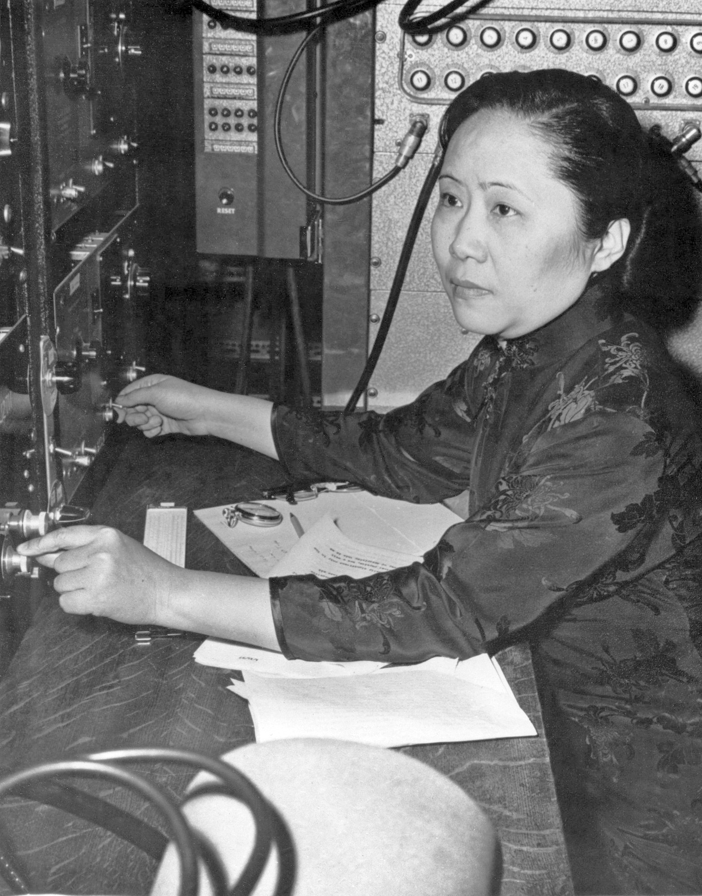

Global picture
Where are women graduating in STEM?
The map shows the share of women among STEM graduates by country. Select a year and hover over a country for details.
Trends
Change through time
Compare how female participation in STEM graduation changed across selected countries.
Fields of study
STEM compared to other fields
This chart compares the female share of graduates across different tertiary education fields.
Contextual analysis
STEM and development indicators
Explore whether economic and social indicators are related to the share of women in STEM.
Faces behind progress
Women who changed science
Data shows the challenge. These stories show the impact.
Ada Lovelace
Mathematician and early computing visionary often considered the first computer programmer.

Marie Curie
Physicist and chemist whose discoveries transformed modern science and medicine.
Katherine Johnson
NASA mathematician whose calculations were essential for early space missions.

Vera Rubin
Astronomer whose work provided strong evidence for the existence of dark matter.

Chien-Shiung Wu
Experimental physicist known for groundbreaking work in nuclear physics.